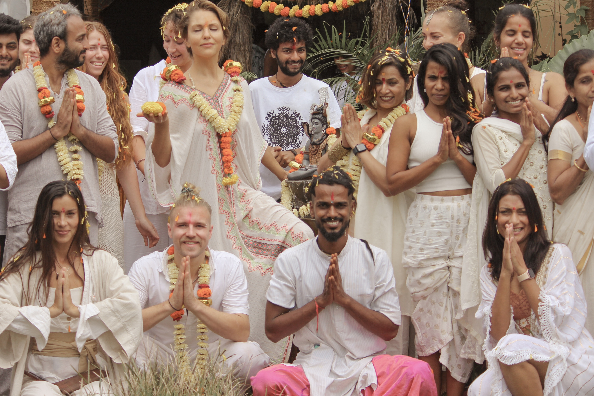
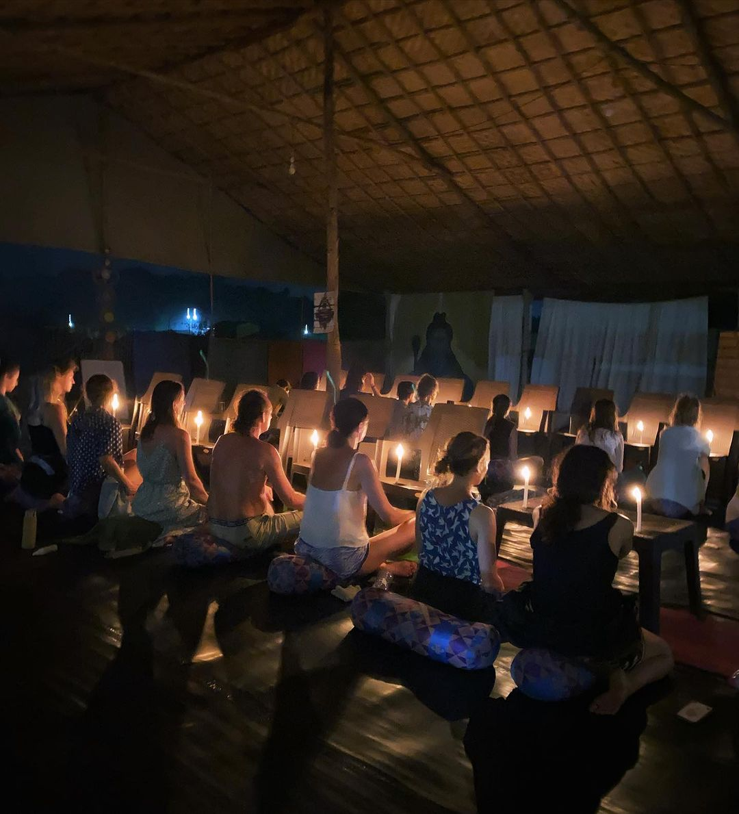
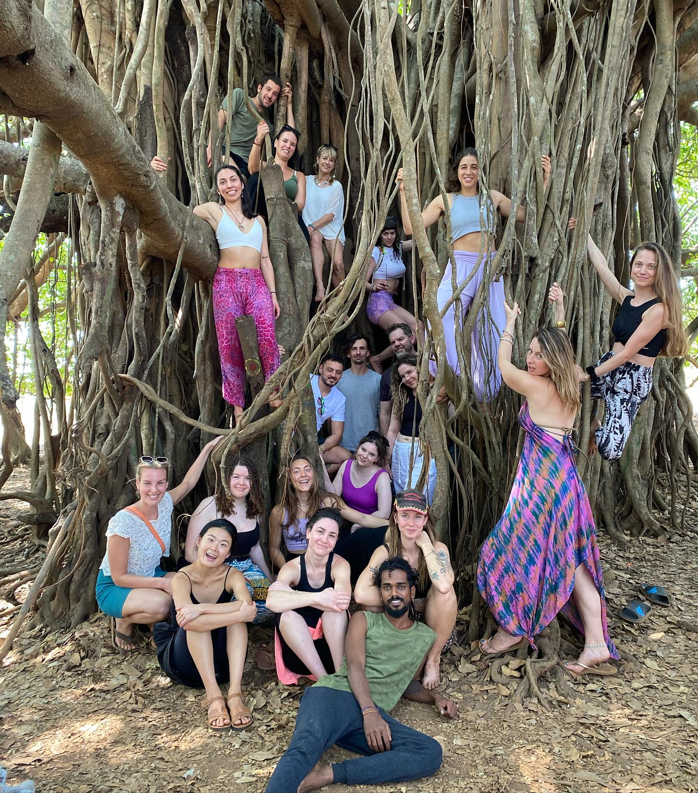

50-Hour Sound Healing
Teacher Training in Goa
Immerse in the sacred vibrations of Tibetan Singing Bowls, Gong Therapy, Nada Yoga, and Crystal Frequencies at our Arambol Beach Ashram.
Harness the Ancient Power of Sound & Nada Yoga
Sound healing is one of the most powerful and accessible modalities for inducing deep meditative states, releasing trauma stored in the nervous system, and restoring cellular harmony.
At Shiva Yoga Goa, our 50-hour Sound Healing Teacher Training takes you beyond simple bowl playing into the rigorous acoustic science, chakra resonance frequencies, brainwave entrainment (Alpha, Theta, Delta), and the traditional philosophy of Nada Brahma (the universe is sound).
Upon graduation, you will be fully certified and confident to host 1-on-1 private therapeutic sound sessions and large group sound bath ceremonies worldwide.




7-Day Sound Healing Curriculum
Comprehensive theory, hands-on acoustic training, and supervised sound bath practicum.
Physics of sound, vibrational frequencies, resonance, brainwave entrainment (Beta to Theta), and how sound alters cellular water structure.
Striking and rimming techniques, bowl placement on physical body, water therapy with bowls, and 7-chakra balancing protocols.
Playing techniques for planetary gongs, mallet selection, crystal quartz singing bowls, tuning forks, and koshi chimes.
Vocal toning, Bija mantra resonance for chakras, sacred Sanskrit chants, and opening the expressive throat chakra (Vishuddha).
How to conduct therapeutic sound sessions for anxiety, insomnia, depression, pain relief, and emotional blockages.
Crafting journeys, setting sacred space, blending instruments, combining with Yoga Nidra, and leading large group ceremonies.
What's Included in Your Training
Certification
50-Hour Sound Healing Practitioner Certificate recognized internationally
Ashram Stay
6 nights accommodation in our peaceful Arambol beachside ashram
Organic Yogic Food
3 daily delicious vegetarian/vegan Sattvic meals prepared fresh
All Instruments Provided
Full access to premium handcrafted 7-metal Tibetan bowls, gongs, and chimes
Detailed Manual
Comprehensive course manual with scripts, frequencies, and session templates
Airport Transfer
Complimentary airport pickup from Goa Dabolim or Mopa airport
Become a Certified Sound Healer in Goa
Batches start every month in Arambol, Goa. Small intimate groups for deep personalized training.